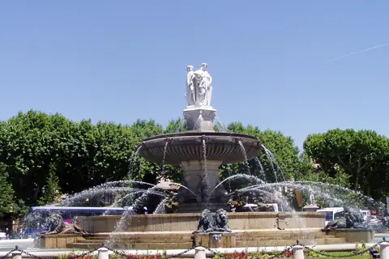

{kind=link}

Atelier des Lauves
세잔의 마지막 작업실이다.

| 항목 | 평가 |
|---|---|
| 여행 적합도 | ★★★★★ Jason·Julia의 생활형 여행에 최적화 |
| 예산 체감 | 중상 |
| 일정 강도 | 보통, Marseille day만 높음 |
| 예약 핵심 | 숙소주차·Atelier·Mucem·Aix–Marseille 교통 확인 |
| 우천 전환 | Mucem 실내 비중 확대, Le Panier 축소 |
여행의 역할: Nice 5박 뒤 프로방스 내륙의 생활 리듬으로 전환하는 4박 거점이다. 엑상은 시장·분수·대학·법원·카페가 압축된 걷기 좋은 생활도시다. 기본안은 엑상과 세잔, 그리고 대중교통으로 다녀오는 Marseille 항구도시 하루에 집중한다. Cassis·Calanques는 날씨와 취향이 맞을 때 Marseille를 완전히 교체하는 선택 대안이다.
여행자 기준: Julia의 수영은 선택 일정이며 숙소 선정조건으로 사용하지 않는다. 아침은 숙소, 점심은 샌드위치·시장·가벼운 현지식, 저녁은 레스토랑을 기본으로 한다. Jason의 스케치 2시간과 Julia의 선택 수영을 9월 12일 같은 시간 블록에 배치한다.
| 장소·경험 | 판단 | 이유 |
|---|---|---|
| Sainte-Victoire 장거리 하이킹 | 비추천 | 4박 일정에서 더위·산불·보행 피로 대비 효율 낮음 |
| Aix에서 Arles 추가 | 제외 | Arles는 9/19 Avignon 기본 당일치기로 배정되어 중복 이동하지 않음 |
| Saint-Tropez | 비추천 | 이동·정체 대비 프로젝트 취향과 밀도 낮음 |
엑상의 단정한 시장도시와 마르세유의 다층적인 항구도시를 대비한다. Marseille에서는 Vieux-Port–Le Panier–Mucem–Fort Saint-Jean만 이어 과밀을 피한다. Cassis와 Marseille를 같은 날 결합하지 않는다.
Day 16은 엑상 체크아웃 후 뤼베롱 농가로 들어가는 이동일이다. 경유지 이상으로 늘리지 않는다.
세잔의 마지막 작업실이다.

'그랑 쿠르'는 1649년에서 1651년 사이, 옛 성벽 자리에 조성됐다.

엑상의 질서정연한 시장·대학도시와 달리 Marseille는 이민, 어업, 상업, 현대문화가 한 항구에 겹친다.

도착 직후 항구 양쪽 부두를 전부 돌지 않는다.

지중해 문명을 다루는 국립박물관이자 바다와 도시를 연결하는 건축이다.

Mucem과 보행교로 연결된 요새다.

세잔이 20세이던 1859년에 아버지가 자스 드 부팡을 사들였고, 60세이던 1899년에 팔았다.

칼랑크 국립공원은 유럽에서 유일하게 육지·해양·도시 근교를 아우르는 공원이다.
세잔이 1890년대 후반 오두막을 빌려 두고 연작을 그린 옛 채석장이다

마르세유의 소란이 부담스러운 날을 위한 완전 대체안이다.

원래는 가죽 무두질 도시였고, 장갑의 냄새를 감추려고 향을 입힌 것이 향수 산업의 시작이라고 알려져 있다

Vieux-Port 북쪽의 경사 골목을 Hôtel de Ville–Place de Lenche–Vieille Charité 방향으로 잇는다.

도시 전체를 읽는 전망은 좋지만 언덕 이동이 별도 왕복을 만든다.

세잔이 평생 80회 넘게 그린 산이다.

세잔만 기대하면 안 되는 미술관이다.

Fontaine de la Rotonde, 1860.

샤갈, 마티스, 피카소와 동료 화가들이 빛을 찾아 생폴드방스로 왔다.
| Cours Mirabeau·Vieil Aix | 필수 | 시장·광장·분수·생활이 연결된 도시 핵심 |
| Place Richelme 시장 | 필수 | 숙소 식사와 프로방스 식재료를 연결 |
| Musée Granet | 필수 | Cézanne·프로방스 미술과 2026 특별전 |
| Atelier des Lauves | 필수 | 세잔의 작업환경과 말년 작품을 구체적으로 이해 |
| Quartier Mazarin | 우선 추천 | 과밀하지 않은 건축 산책과 Granet 동선 |
| Marseille Mucem·Fort Saint-Jean | 필수 | 내륙 프로방스와 항구대도시의 대비 |
| Cassis·Calanques | 대체 | 바다·석회암 경관을 더 선호하고 기상조건이 맞을 때 교체 |
| Terrain des Peintres | 우선 추천 | Jason 스케치와 Cézanne의 시점 연결 |
| Bastide du Jas de Bouffan | 선택 | 세잔의 가족사·초기작 관심이 클 때 |
| Bibémus quarries | 선택 | 채석장 형태와 후기회화 관계, 가이드 언어 제약 |
| Cathédrale Saint-Sauveur | 선택 | 여러 시대 건축이 겹친 성당, 일정 과밀 시 외관 |
| Fondation Vasarely | 선택 | 옵아트·현대건축 선호 시 Cassis 우천대체 |
향수 가게 한 곳 30–40분 상한, 워크숍(90분+) 금지
Le Panier 또는 Mucem 관내 후보 — 점심과 카페 90분
첫 내륙 구간이다. Barcelona부터 Nice까지 11일이 전부 해안이었다. 엑상은 바다에서 30km 안쪽이고, 여기서부터 Lyon까지 15일이 내륙이다.
동시에 한 사람의 생애를 따라가는 유일한 구간이다. 세잔은 이 도시에서 태어나 이 도시에서 죽었고, 파리에 오래 있었지만 결국 돌아왔다. Day 13에 그가 어린 시절 살던 집 앞을 지나고, Day 15에 그가 마지막 4년을 보낸 작업실에 간다.
그리고 2026년은 세잔 사후 120주년이다. 평소 닫혀 있던 자스 드 부팡과 로브 아틀리에가 7월 4일–10월 31일에만 열린다. 이 여행의 날짜가 그 안에 들어간다. 우연이지만 활용하지 않을 이유가 없다.
9/9 Nice에서 Saint-Paul·Grasse 경유 → Aix 체크인·주차·장보기
↓
9/10 시장·Vieil Aix·Musée Granet — 도시와 미술
↓
9/11 Marseille — Vieux-Port·Le Panier·Mucem·Fort Saint-Jean
(Cassis·Calanques는 하루 전체를 바꾸는 선택 대안)
↓
9/12 토요일 시장 + Atelier des Lauves + Jason 스케치 / Julia 수영
↓
9/13 Lourmarin 경유 → Luberon 농가
| Day | 날짜 | 점심 | 저녁 |
|---|---|---|---|
| 12 | 9/9 수 | 이동 중 (그라스 인근) | 엑상 도착 후 가벼운 한 끼 |
| 13 | 9/10 목 | 시장에서 조달 | 구시가지 식당 |
| 14 | 9/11 금 | Marseille panisse·지중해식 가벼운 점심 | 엑상 복귀 후 가볍게 |
| 15 | 9/12 토 | 시장 조달 또는 아틀리에 근처 | 마지막 밤. 제대로 된 한 끼 |
| 16 | 9/13 일 | 뤼베롱 이동 중 | 농가 |
Day 12 저녁에 야심을 부리지 마라. 니스에서 차를 받아 두 곳을 경유해 도착하는 날이다. 숙소 근처로 정한다.